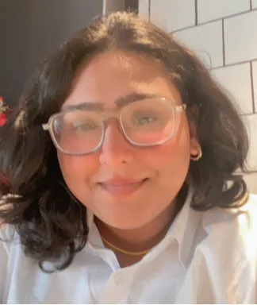

Research Route
Developing original policy research, literature reviews, and evidence-based analysis. Members work with primary and secondary sources and produce a Capstone research paper or policy brief.
YSP helps youth aged 16–28 across the world turn research, storytelling, and lived experience into sustainable policy projects with real‑world impact.
Six membership routes. Four intake seasons per year. Fully asynchronous, mentor‑matched, and free — designed for youth 16–28 who want to produce original policy work under their own byline.
Developing original policy research, literature reviews, and evidence-based analysis. Members work with primary and secondary sources and produce a Capstone research paper or policy brief.
Understanding how policy is made, analysed, and communicated. Members study specific policy frameworks and produce a Capstone policy explainer or legislative brief.
Exploring the intersection of sustainable business models, corporate governance, and ESG policy. Members produce a Capstone analysis of a business policy case study.
Examining international relations, multilateral institutions, and diplomatic approaches to global challenges. Members produce a Capstone position paper or simulation report.
Focusing on climate policy, environmental governance, and sustainability frameworks. Members produce a Capstone environmental policy brief or advocacy piece.
Examining grassroots policy engagement, social equity, and community-led advocacy. Members produce a Capstone community impact report or campaign framework.
Each programme runs as a small studio of 8–12 fellows. Mentorship is hands‑on, meetings are real, and every cohort ends with something published, piloted, or proposed.
Six‑month studios on housing, climate adaptation, and digital rights. Pair with a senior advisor, draft a brief, ship a pilot.
Embed with a city office, a non‑profit, or a regulator for ten weeks. Stipend included.
Two‑week intensives. One question, one brief, published openly.
Slow, monthly seminars on the literature behind today's policy debates.
Bring your own initiative. We provide critique, contacts, and a desk.
All YSP research is published openly. Slow journalism for policy — written by fellows, edited by senior advisors.
At YSP, your work outside the classroom isn't an entry on a list — it's the foundation of every policy brief you write, every fellowship you're eligible for, every story you tell, and the overall narrative you build.
Annotate sources, draft sections, assign mentor reviewers, and ship a finished brief without ever leaving your project. Citations stay attached. Versions stay in order.
Every project moves through the same five stages, so mentors can plug in at any step and your work doesn't stall in someone's inbox.
Live readership and citation graphs by region — see when a policymaker, journalist, or fellow institution actually engages with what you've published.
Every published output keeps your name on it, forever. No ghostwriting, no organisational anonymity. Mentors edit; you author.
The Impact Project™ Playbook is built around a public policy problem you genuinely care about solving. Identify a gap, find your niche, ship something with measurable outcomes.
Turn lived experience, local context, and patient curiosity into a focused, credible policy research angle. The more specific, the more powerful.
From research question to published output, we walk alongside you — mentor reviews, source library, drafting workspace, and editorial support.
Community amplification, fellowship referrals, and direct introductions to policymakers, journalists, and funders aligned with your problem.
Members are early‑career researchers, undergraduates, and self‑taught practitioners — writing under their own names, on problems they actually live with.
"I came in thinking I needed another internship. I left with a brief on adaptive cooling that my own city cited in a council session. That's the difference."
"YSP is the first place that let me write about caste data in tech without flattening the politics. The mentor edits were sharp; the byline stayed mine."
"I'm a college student in the U.S. who grew up in Naples. YSP helped me connect informal economy research across both contexts — without pretending they were the same."
"The asynchronous structure meant I could keep my day job at a regional NGO. I shipped three briefs in a year — under my name, with an editor who actually knew the field."
"Most youth programmes treat us like résumé lines. YSP treated me like a colleague. The expectations were higher, and so was the work."
"I went from liking policy to actually doing it. The Impact Project format gave me something concrete to point at when I applied to grad school."
Whether you're a researcher, storyteller, or advocate, YSP has a track for you. No application fee, no gatekeeping — just purposeful work.
Browse an open database of youth‑led policy research papers, briefs, and datasets across sustainable development, climate, urban policy, healthcare access, and digital rights. Contribute your own work for community peer review.
Browse the library →Launch your own policy initiative with structured YSP support. From research question to published output, we walk alongside you — community amplification, mentor connections, potential featuring on partner platforms.
Start a project →Get matched with a working policy practitioner — climate governance, digital rights, urban planning, healthcare access, cross‑border advocacy. They don't just advise; they open doors.
Apply for matching →YSP's mentors are policy professionals actively working in sustainable development, climate governance, digital rights, urban planning, healthcare access, and cross‑border advocacy. They don't just advise — they open doors.

YSP is led by young changemakers who have lived the process — turning lived experience into policy work, and policy work into lasting institutional impact across ASEAN.



YSP is a lean, mission‑driven team operating at the intersection of research, storytelling, and ASEAN policy advocacy. We work with people who are already doing meaningful work — and who want to do it at scale.
Whether you want to launch an impact project, apply for mentorship, explore a research collaboration, or discuss a partnership with YSP — we'd love to hear from you. No account needed, ever.